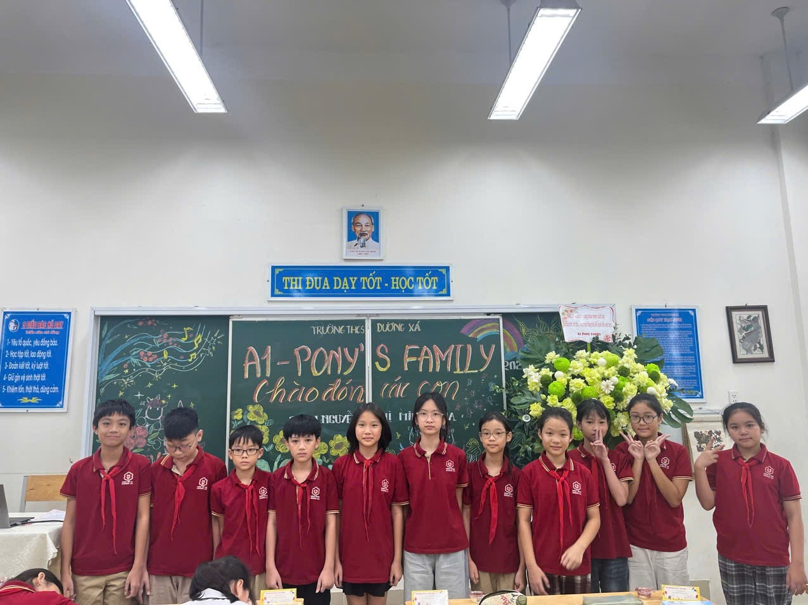

Lời ngỏ
Thầy cô là những người đã tận tâm gieo mầm tri thức, dìu dắt học trò trên hành trình trưởng thành. Bằng tình yêu nghề và lòng tận tụy, thầy cô đã lặng lẽ hi sinh để thắp sáng tương lai cho bao thế hệ. Nhân ngày Nhà giáo Việt Nam 20–11, chúng em xin gửi tới quý thầy cô lời biết ơn chân thành và lời chúc tốt đẹp nhất.
Bài thơ Tri Ân
Bụi phấn trắng vương đầy trang vở nhỏ, Từng nét chữ chở bao điều thầy trao. Lời giảng dịu dàng như dòng sông cổ, Dẫn con thuyền tri thức đến bến mơ. Thời gian trôi qua, tóc thầy thêm bạc, Nhưng nụ cười vẫn nở giữa bao lo toan. Bao thế hệ lớn khôn nhờ cánh hạc, Chở ước mơ bay khắp chốn muôn loài. Ngày hai mươi, ngàn hoa xin dâng tặng, Lời tri ân gửi đến thầy cô kính yêu. Dẫu đi khắp nẻo đường đời xa vắng, Vẫn ghi lòng công ơn thầy dạy khôn.
Ngày 20–11, chúng ta tri ân những thầy cô đã tận tụy gieo mầm tri thức, dìu dắt học trò trưởng thành và hun đúc tâm hồn bao thế hệ học trò. Thầy cô không chỉ dạy chữ mà còn dạy cách làm người, truyền cảm hứng, vun đắp nhân cách và ươm mơ cho thế hệ tương lai. Xin kính chúc thầy cô luôn mạnh khỏe, hạnh phúc, viên mãn và tiếp tục hoàn thành sứ mệnh cao cả của mình.
Kỷ niệm học sinh lớp 6A1 và thầy cô THCS Dương Xá
Về Thăm Lại Thầy Cô
Trong trường vất vả dạy đàn con
Chẳng ngại gian lao quãng thân mòn
Ló sáng bình minh cơm mãi vội
Về đêm lịm tắt bữa chưa ngon
Âm thầm chỉ dẫn ơn luôn nhớ
Lặng lẽ khuyên răng nghĩa vẫn tròn
Áo đẫm mồ hôi toàn bụi phấn
Cô Thầy khổ nhọc tựa ngàn non
Truyện cười: "Kết quả không ngờ"
Trong buổi họp phụ huynh, cô giáo đưa ra một tờ bài kiểm tra Toán của cả lớp. - Thưa bà, con bà Thúy và con chị Minh đều trả lời sai hết mọi câu hỏi. Và đặc biệt, cả hai đều mắc những lỗi giống nhau. Mẹ Thúy lên tiếng: - Làm sao cô chắc chắn hai đứa trả bài giống nhau? Cô giáo chỉ vào một câu: 5 x 3 = ?. Thúy viết “em không biết đáp án”, và Minh viết “bạn em cũng không biết ạ”.
Đố vui
Mặt em phương trượng chữ điền
Da em thì trắng áo xinh mặc ngoài
Lòng em thì có đất trời
Có câu nhân nghĩa, có lời hiếu trung
Đến khi quân tử có dùng
Thì em sẽ ngỏ tấm lòng cho xem.
Đáp án: ...........